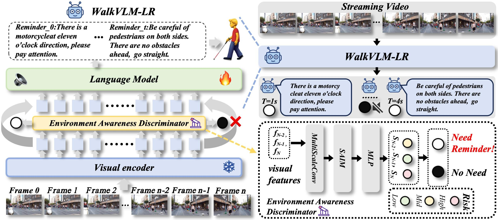
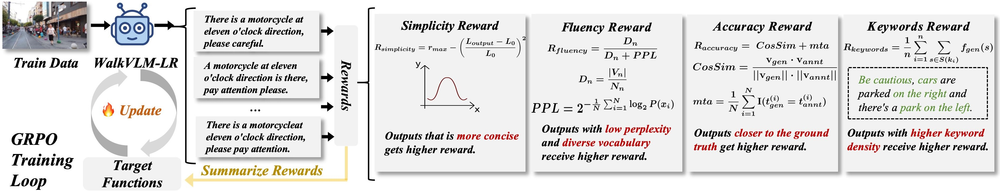
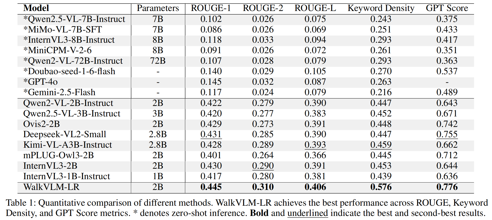
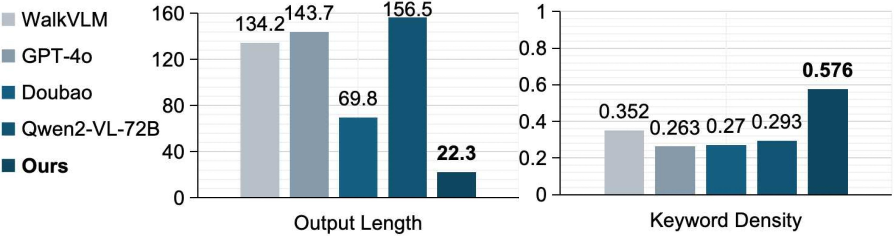
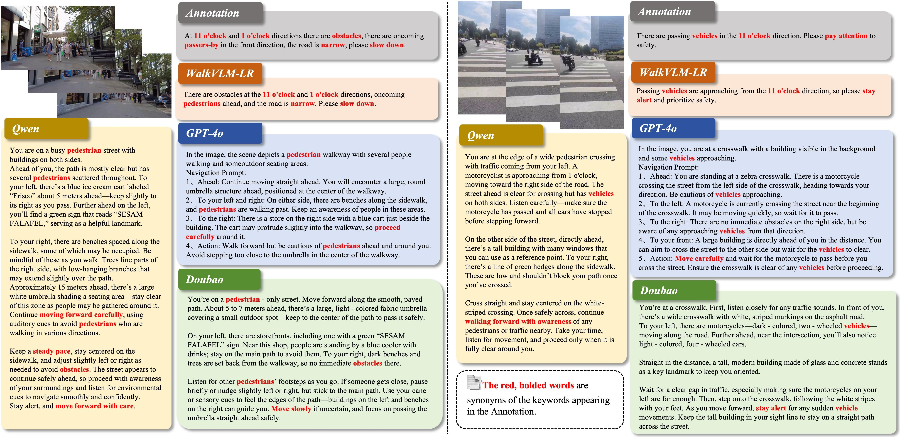
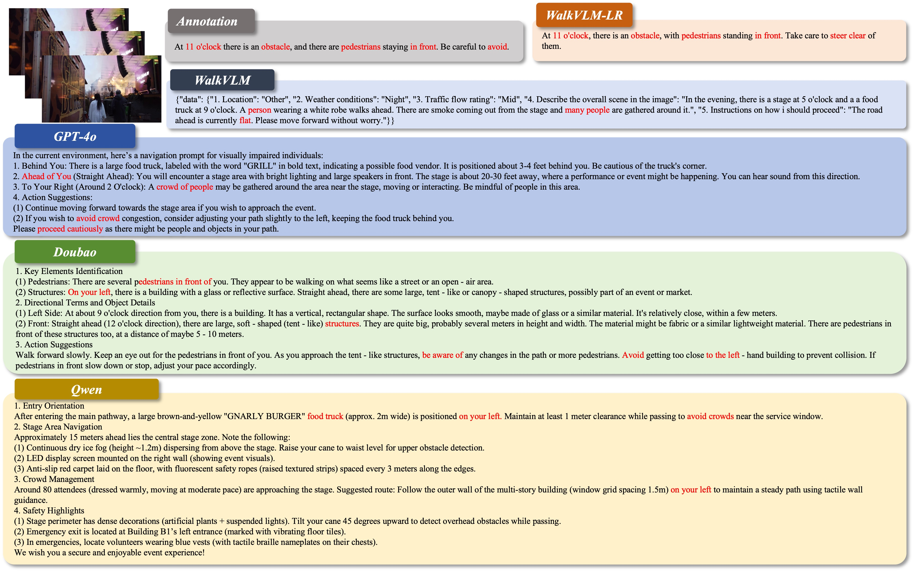

Abstract
Approximately 283 million people worldwide live with visual impairments, motivating increasing research into leveraging Visual Language Models (VLMs) to develop effective walking assistance systems for blind and low vision individuals. However, existing VLMs in walking assistant task often have outputs that contain considerable redundancy and extraneous details, adversely affecting users' ability to accurately assess their surroundings. Moreover, these models typically lack the capability to proactively assess environmental risks and adaptively trigger reminders based on the appropriate scene, leading to excessive temporal redundancy.
To mitigate output and temporal redundancy, we propose WalkVLM-LR, a walking assistance model with less redundancy. To reduce output redundancy, we introduce four human-preference-based custom reward functions within the GRPO-based reasoning framework to optimize the output in terms of conciseness, fluency, keyword density, and accuracy, thereby producing more informative and streamlined outputs. To minimize temporal redundancy, we incorporate an environment awareness discriminator, which shares the visual encoder with the VLMs to reduce redundant computations and enhance discriminative efficiency, to make WalkVLM-LR assess scene risk levels and minimize unnecessary reminders. Experimental results demonstrate that our method achieves state-of-the-art performance across all evaluation metrics compared with other models, particularly in output conciseness and less temporal redundancy.
Method
GRPO for concise reminders
Four human-preference rewards jointly optimize simplicity, fluency, accuracy, and keyword coverage.
EAD for risk-aware triggering
The Environment Awareness Discriminator shares the visual encoder and predicts A/B/C risk levels before invoking the LLM.

Figure 1: The architecture of WalkVLM-LR. The top-right of the image illustrates how WalkVLM-LR operates, while the left side depicts its overall design. The bottom-right shows the structure of the EAD module.

Figure 2: Four Rewards in GRPO Training. GRPO utilizes an intra-group relative advantage evaluation mechanism, combined with four customized reward functions, to assist the VLM in learning how to generate outputs that align with human preferences.
Results

Table 1: Quantitative comparison of different methods. WalkVLM-LR achieves the best performance across ROUGE, Keyword Density, and GPT Score metrics. These results highlight the effectiveness of WalkVLM-LR in reducing redundancy while maintaining high-quality, concise outputs, making it a superior choice for walking assistant applications.

Figure 3: The comparison between WalkVLM-LR and mainstream VLMs in terms of output length and keyword density. The outputs of WalkVLM-LR are the shortest and exhibit the highest keyword density, containing the least amount of redundant information.

Figure 4: Output comparison of different VLM models in walking assistant task. Compared to other models, WalkVLM-LR generates concise and informative responses, offering better guidance for visually impaired users.

Figure 5: Output comparison of different VLM models in walking assistant task. Compared to other models, WalkVLM-LR generates concise and informative responses, offering better guidance for visually impaired users.
User Study & Practicality
BibTeX
If you use our work in your research, please cite:
@inproceedings{li2026less,
title={Less Redundancy: Boosting Practicality of Vision Language Model in Walking Assistants},
author={Li, Chongyang and Yuan, Zhiqiang and Bi, Hanbo and Jia, Zexi and Zhang, Jinchao},
booktitle={ICASSP 2026-2026 IEEE International Conference on Acoustics, Speech and Signal Processing (ICASSP)},
pages={8387--8391},
year={2026},
month={May},
organization={IEEE}
}
@inproceedings{yuan2025walkvlm,
title={WalkVLM: Aid Visually Impaired People Walking by Vision Language Model},
author={Yuan, Zhiqiang and Zhang, Tiancheng and Zhu, Yuxin and Zhang, Jiaqi and Deng, Ying and Jia, Zexi and others and Zhang, Jinchao},
booktitle={2025 IEEE/CVF International Conference on Computer Vision (ICCV)},
pages={9845--9855},
year={2025},
month={October},
organization={IEEE}
}